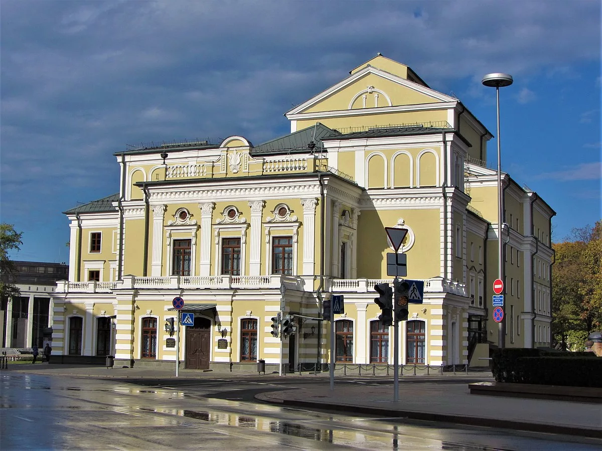
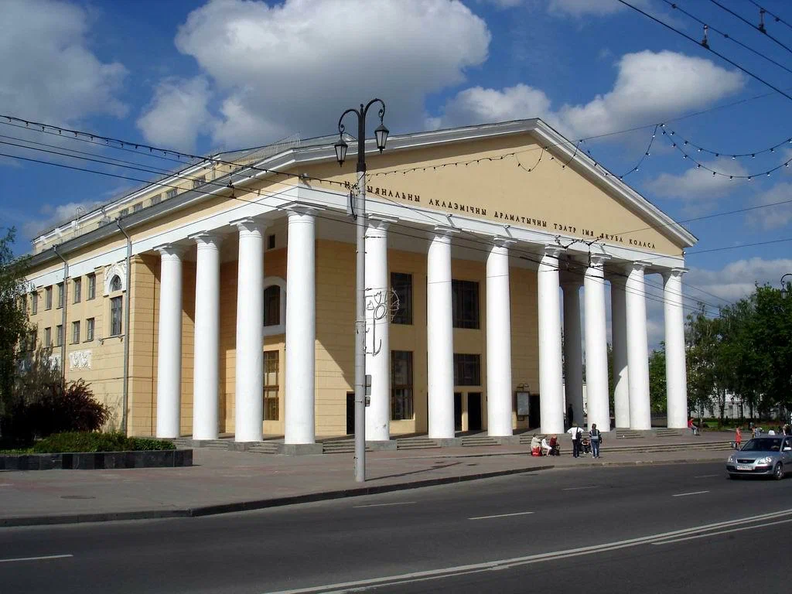
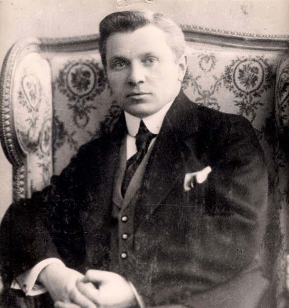
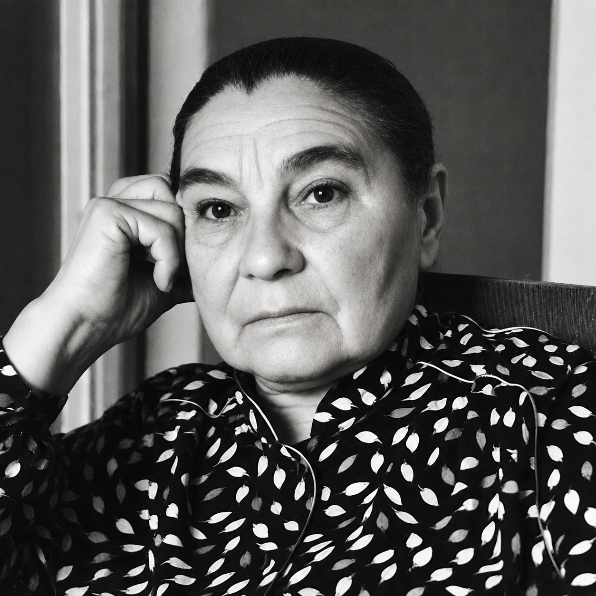

Театр Беларуси XX века
XX век стал для белорусского театра временем драматических перемен: от первых профессиональных государственных театров до сложных процессов идеологического давления и поиска национального стиля. Этот период вместил в себя революцию, войну, послевоенное восстановление и постепенное формирование того театрального ландшафта, который мы знаем сегодня.
Рождение профессионального театра

Национальный академический театр имени Янки Купалы
Театр XX века начинается с любительских кружков и гастрольных трупп начала столетия. Ещё весной 1917 года было создано Первое белорусское товарищество драмы и комедии, которое действовало до середины 1920 года под руководством Флориана Ждановича. Параллельно выступала труппа «Белорусского народного театра» под руководством Франтишка Алехновича. Именно на базе участников этого товарищества будет создан Белорусский государственный театр в 1920 году.
В сентябре 1920 года состоялось открытие Первого Белорусского государственного театра (БГТ-1). На открытии давали «Рысь» Э. Ожешко, «Свадьбу» Чехова и еврейскую пьесу «Люди» Шолом-Алейхема. С первых же постановок в театре присутствовал национальный репертуар из произведений Я. Купалы, Е. Мировича («Машэка», «Кастусь Каліноўскі», «Каваль-ваявода»).
Этот театр одновременно являлся и центром музыкальной жизни: он имел хор, симфонический оркестр и балетную труппу. Руководил театром Е. Мирович. В этом театре выросли талантливые актёры национальной сцены, среди них Ольга Галина, Глеб Глебов, Генрих Григонис, Владимир Крылович, Екатерина Миронова, Борис Платонов, Лидия Ржецкая, Владимир Владимирский.

Национальный академический драматический театр имени Якуба Коласа
В августе 1920 года в Минске открылся театр под руководством В. Голубка, который в 1926 году был переименован в Белорусский государственный передвижной театр. Среди первых актёров театра были В. Голубок, его жена Ядвига Александровна, белорусские писатели А. Дудар, В. Сташевский, М. Чарот. Спектакли, которые давались по всей Беларуси, были яркими, с национальной музыкой, песнями, танцами. Театр пользовался любовью у зрителей, а Голубку в 1928 году было присвоено звание народного артиста БССР, первому в республике.
Для подготовки актёров в сентябре 1921 года в Москве была основана белорусская драматическая студия. В 1926 году студию закончили 34 человека. На базе этого выпуска был создан Второй Белорусский государственный театр в Витебске (театр имени Я. Коласа). В его труппу вошли такие актёры, как Янина Глебовская, Александр Ильинский, Алена Лаговская, Павел Молчанов, Константин Санников, Стефания Станюта.
Театр 1920-х годов был тесно связан с национальным возрождением. Ставились пьесы В. Дунина-Марцинкевича, К. Каганца, М. Грамыки, Я. Купалы. Однако уже в это время начинается идеологическое давление: в государственных театрах осуществлялся прямой контроль со стороны партийных органов. Театрам необходимо было выполнять все рекомендации сверху, среди которых было требование ставить пьесы русских авторов в переводе на белорусский язык («Разлом» Лавренёва, «Бронепоезд 14-69» Вс. Иванова). Постепенно национальный репертуар стал вытесняться идеологически «правильными» пьесами.
Театр в годы Великой Отечественной войны
В годы Великой Отечественной войны театральная жизнь Беларуси не прекратилась. Театры были эвакуированы вглубь страны, где продолжали работать. В партизанских отрядах создавались фронтовые театральные бригады, которые выступали перед бойцами и мирным населением. После освобождения Беларуси в 1944 году театры вернулись в Минск и другие города, началось восстановление разрушенных зданий и коллективов.
В послевоенный период белорусский театр пережил новый подъём. Уже в сезоне 1944/45 года в Беларуси работало 12 театров. При театрах имени Я. Купалы и имени Я. Коласа были созданы студии для подготовки актёров. В 1948 году с блестящим успехом прошла премьера спектакля «Константин Заслонов» по пьесе А. Мовзона. Актёры спектакля Борис Платонов, Глеб Глебов, Ирина Жданович, а также режиссёр театра Константин Санников были удостоены Сталинской премии.
Театр в послевоенные десятилетия
В 1960-1980-е годы театр становится более разнообразным по жанрам и стилям. Наряду с драматическими спектаклями развиваются музыкальный театр, театр кукол, экспериментальные постановки. Знаменитая «оттепель» 1960-х годов привнесла новое веяние и в Купаловский театр. Постановки Б. Эрина, а также молодых режиссёров новой волны, Б. Луценко и В. Раевского, объединили лучшие традиции театра и новаторства.
В 1970-1980-е годы особенно ярко проявились такие актёры, как Галина Макарова, Ростислав Янковский, Лилия Давидович, Виктор Тарасов. Театр становится не только местом для спектаклей, но и пространством для общественного диалога, где поднимались сложные вопросы истории и современности.
Театр на рубеже веков
В конце 1980-х - начале 1990-х годов, в период перестройки и после обретения независимости, белорусский театр пережил сложные процессы. С одной стороны, появилась свобода творчества, возможность ставить ранее запрещённые произведения. С другой - экономические трудности, сокращение финансирования, потеря зрителя.
В это время возникают независимые театральные коллективы, экспериментальные студии, которые ищут новые формы и темы. Театр становится более разнообразным: от классических постановок до авангардных экспериментов. В конце XX века на сцену выходит новое поколение режиссёров и актёров, которые определяют лицо современного белорусского театра.
Ключевые имена

Евстигней Мирович
Евстигней Мирович - режиссёр, руководитель Первого Белорусского государственного театра, один из основателей белорусского профессионального театра.
Владимир Голубок - актёр, режиссёр, руководитель Белорусского государственного передвижного театра, первый народный артист БССР (1928).
Глеб Глебов - актёр, мастер сценического перевоплощения, лауреат Сталинской премии.
Стефания Станюта - актриса, символ белорусской сцены XX века.
Борис Платонов - актёр, режиссёр, народный артист СССР, лауреат Сталинской премии.
Галина Макарова - актриса, народная артистка СССР.
Ростислав Янковский - актёр, народный артист СССР.

Галина Макарова